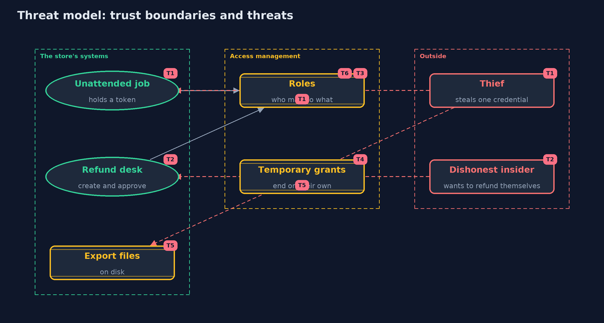

Threat Model — The Principle of Least Privilege
A threat model answers four questions: what are we protecting, who or what could harm it, how, and what do we do about it. This one covers this project's own demo system, not a production deployment. Domain: an online store.
Scope
How an online store gives access to its staff, its unattended jobs and its files: roles and permissions, refunds that need two people, temporary grants, the audit of unused permissions, and the file permissions of exports. It covers theft of one credential and a dishonest insider. It does not cover how people prove their identity, network access, or the security of the systems the permissions apply to.
What we protect (assets)
- Customer data, payments and refunds.
- Secrets such as keys and tokens.
- The roles and grants themselves.
- Export files on disk.
Who and what acts on the system
- Staff in support, warehouse and finance roles.
- Unattended jobs and services holding tokens.
- An attacker who steals one credential.
- A dishonest insider.
Trust boundaries
A trust boundary is a line that data or a request crosses between parts that trust each other differently. Threats cluster where those lines are.
- Credential to the permissions behind it: the blast radius is everything across it.
- Request to decision: the policy is the guard.
- Role management to everyone else: who may change roles is itself a permission.

Each dashed box is a trust boundary. A rose tag such as T1 shows where the threat of that number, in the table below, applies.
Threats, using STRIDE
STRIDE is a checklist of six kinds of threat: Spoofing (S), Tampering (T), Repudiation (R), Information disclosure (I), Denial of service (D), Elevation of privilege (E).
| Id | Kind | Threat | Where it shows up | Control in this project | What is left |
|---|---|---|---|---|---|
| T1 | Elevation of privilege | A stolen token of an over-privileged job reaches everything | Access, Policy.reachable |
Scoped roles for each job, and a measured blast radius | A scoped job is still a stolen job, so tokens should also be short-lived and rotated |
| T2 | Repudiation | One person creates and approves their own refund | RefundDesk |
Creator and approver must be different people, whatever their roles | Two colluding people can still do it, so approvals should be reviewed |
| T3 | Elevation of privilege | Roles grow over time until they allow far more than the work needs | Catalogue.ROLES |
Review roles regularly and keep them small | Needs an owner and a schedule; code cannot do it alone |
| T4 | Elevation of privilege | Temporary access is never removed | Access.grant |
Grants have an end and expire on their own | A renewal that nobody checks turns a temporary grant into a permanent one |
| T5 | Information disclosure | An export file is read by another user on the machine | OwnerOnly |
Owner-only file and folder permissions | The owner's account, backups and root can still read it |
| T6 | Tampering | Someone changes the roles to give themselves access | the management of roles | Changing roles is itself a permission that is held by very few and recorded | Not modelled here; needs an audit log that the changers cannot edit |
Assumptions
- People and jobs are correctly identified before the policy is asked.
- The audit's usage records are complete and cannot be edited by the people they describe.
- In the demo, names and numbers are fixed and the clock is simulated.
Out of scope
- Authentication and sessions.
- Cloud IAM and Kubernetes RBAC: the tools projects.
- Sandboxing code inside the JVM.
How the tests check this
PolicyTestchecks pattern matching, deny by default, explicit deny in any order, and the blast radius counts.AccessTestchecks combined roles, user denies, grant windows, and two-person refunds including for an admin.AuditAndFilesTestchecks the audit limit and owner-only file permissions.DemoRunsTestcompares the whole demo with the golden output.
Where this model goes next
The next project, patching-and-dependency-hygiene, looks at the other half of staying safe over time: keeping the software itself up to date.